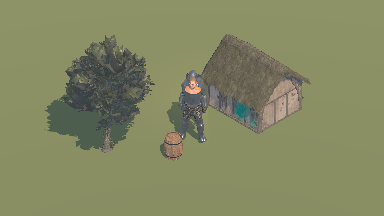
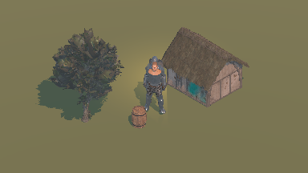
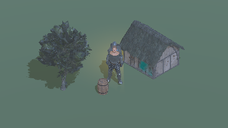

Briarwake · BW-097-T03 · reference-review-v4 · 2026-10-19
Concept → gameplay-scale comparison
Awaiting human review of character readability
Principal concept at left. Imported Moore RPG probe at right. 384×216 world, ortho height 9,
−35° / −45°, nearest integer presentation. Enlarged images are diagnostic; review native
pixels below.
Principal concept · boxes identify the source crops below. SHA-256
12fb86f3b96226f20aacde1c135fcd3e29c7eb0fc4ffa6a68a3007b695fc3abc

Moore RPG probe · day / zoom ×1. Larger upright knight with repaired source armor textures
and frontal fill. Native zoom ×1 is the readability test; the ×2 view is diagnostic.
Character readability and art approval remain pending.
Character, props, depth and lighting
Character
Principal concept · native source crop
Probe · projected region at zoom ×1
The first imported-asset candidate was rejected by the user because the person was not
recognizable. The revised knight uses an upright source idle pose, 1.8 display scale, a
higher focus point, brighter sky/ambient and frontal fill. Source torso/cape PBR textures
transfer through simple export materials to fix black albedo. Judge head, torso, separate
arms and two legs at native zoom x1; this candidate still needs human review.
Props
Principal concept · native source crop
Probe · projected region at zoom ×1
The imported timber barrel is a single simple prop beside the detailed knight and a small
peasant hut. Its staves, rim and round mass read at zoom x1. The hut has more texture
density than the initial dummy corner; it establishes realistic material/architecture
inputs without starting asset-volume production.
Contact
Principal concept · native source crop
Probe · projected region at zoom ×1
Imported boots, barrel, tree trunk and hut foundation meet the plain ground receiver with
directional shadows. The hut overlaps the ground and supports wall/roof depth comparison.
AO/contact-depth candidates, water and final composition remain later tests; shadow-only
depth is not a completed contact-depth effect.
Palette
Principal concept · native source crop
Probe · projected region at zoom ×1
Source foliage, thatch/timber and barrel textures retain the muted environment palette.
The revised knight has frontal fill and brighter ambient/sky reflections to expose armor
forms. These are declared prototype lighting changes; final stylized value separation and
outline/highlight decisions remain T05.
Native gameplay pixels
Each image below has 384×216 source pixels, displayed 1:1 when room permits. Compare part
separation and warm/cool light here before inspecting the ×2 diagnostic.
Day · 384×216 native pixels

Warm · 384×216 native pixels

Cool · 384×216 native pixels
Day zoom ×2 diagnostic ·
Native Retina output with independent HUD
· Actual execution and capture hashes
Imported fixture provenance
The user-selected Moore RPG library supplies the knight, hut, tree and barrel. Source and
converted models/textures remain local; the recipe and rendered evidence are retained. The
original Unreal project is read-only. Reproduction requires an authorized local copy of that
library.
Selected asset recipe ·
Engine, source/dependency and converted hashes
· Unreal export log
-
Material transfer fixes the source torso/cape graphs that baked black, preserving authored
base color, normal, roughness, metallic and torso opacity maps. Export-only materials are
created unsaved in the isolated clone. Other export warnings remain in the retained exporter
log.
-
The knight freezes seven compatible Anim_Idle_Straight clips at time 0. Cloth simulation,
foliage wind, Blueprint interaction and UE gameplay are not transferred.
-
Knight/hut/tree/barrel display scales are 1.8/0.5/0.35/1.0 and camera focus height is 1.3m.
These are comparison composition settings.
Proposed observable bounds
| Area |
Review proposal |
Decision |
| detail |
At normal zoom x1, the reviewer must immediately recognize a human figure with a head,
torso, two arms and two distinct legs/boots; armor and cloak accents should remain
distinguishable from the ground and hut. Enlarged crops or zoom x2 do not establish this
bound.
|
Proposed |
| proportions |
Retain 384x216 and orthographic height 9/4.5. Prototype display scales: knight 1.8, hut
0.5, tree 0.35, barrel 1.0; camera focus height 1.3m keeps the enlarged character within
both views. These composition proportions need explicit acceptance and do not define
production gameplay dimensions.
|
Proposed |
| palette-depth-lighting |
Knight silhouette remains separable from ground, hut and foliage in all three lighting
states; boots and building foundations meet the ground, architecture depth is visible,
amber light does not erase armor/cape separation.
|
Proposed |
| motion |
T04/T09 must show no stationary pixel changes, no repeated crawl/shimmer on rigid edges
during slow/diagonal tracking, no one-frame silhouette disappearance or outline-width
pumping. One internal-pixel silhouette lines and selective convex highlights are
reviewed in T05. No motion pass is claimed in T03.
|
Proposed |
| composition |
No filled-surface outlines, stale reflection/depth frames, actor disappearance or
unauthorized information in later combined cases; fallback deviations need explicit
review.
|
Proposed |
Provisional measurement budgets — approval required
Proposal for this source probe on Apple M2 Max / Metal: 60 FPS; CPU frame p95 ≤8 ms; GPU frame
p95 ≤8 ms; peak process RSS ≤1,024 MiB; peak engine rendering allocations ≤256 MiB. Use
384×216 internal and 960×640 logical output on actual Retina ×2. These are proposals, with no
measured compliance claim. T10 must retain warmup, raw samples, percentiles and separate
process/engine memory accounting; unavailable GPU timings cannot pass.
Proposed deviations
-
User-selected Moore RPG assets replace primitive fixtures. The original torso/cape graphs
exported black, so unsaved export materials connect their authored PBR textures directly.
Other source PBR materials remain; final toon/outline changes remain T05.
-
A single hut, tree and barrel, plain ground and reduced density isolate the comparison.
Following the user readability finding, knight display scale is 1.8, hut/tree 0.5/0.35;
upright pose, focus height 1.3m and camera-aligned fill are provisional composition changes.
-
Unreal-specific material features and blueprint behavior do not transfer automatically.
Export warnings and observed differences are retained with the local asset manifest; no UE
gameplay logic is ported.
-
Final one-pixel outlines/highlights, water, AO/contact-depth and atmosphere are deferred to
their own tickets; this approval establishes comparison bounds only.
Supplementary research
-
Outlines / Camera / Lighting
· Low-poly silhouettes, independent convex highlights, grid-aligned camera with residual
correction, restrained toon light. These guide later cases; historical custom Godot build is
not current capability evidence. Article text inspected 2026-10-19
-
Depth and normal outlines ·
Neighbor texel tests and surface/view-angle artifact checks inform T05; Unity-specific
implementation and SMAA are not adopted as Godot defaults.
Article text inspected 2026-10-19
-
00:03 · At 00:03 the
Unity game-view scene separates pale stone stairs/columns and brown ground from green
foliage with broad cast shadows. Adopt the readable large masses and restrained green/stone
palette as a comparison observation; this is neither the principal appearance target nor
Godot capability evidence.
Actual decoded frame visually inspected by Codex on 2026-10-19; no human art
approval.
Inspected frame
-
00:30 · At 00:30 the
Blender view shows plain squared columns with stepped bases and simple stair/terrain masses
before detailed surface work. Adopt simple architectural prop silhouettes beneath
character-level detail; no model, texture or authoring pipeline is copied. This modeling
view cannot certify gameplay pixel readability.
Actual decoded frame visually inspected by Codex on 2026-10-19; no human art
approval.
Inspected frame
Review decision
Reviewer: None · approval: None
-
User finding on v3: the person was not recognizable at gameplay scale. The v4 readability
revision requires a new human review.
-
Human approval of visual/motion bounds, prototype budgets and deviations has not been
received.
Confirm or revise the visual bounds, budgets and deviations. Supplementary frames at 00:03
and 00:30 have been inspected separately; the original 00:00/04:40 proposals are superseded.
Human approval establishes a comparison baseline only. Later motion/effect/package tests
remain required.
Source of review decisions: visual-review.json. Regenerate
this sheet with python3 validation/tickets/BW-097-T03/build_review.py from
mmo_docs/. The concept remains unchanged, comparison crops use SVG view boxes, and no
reference art is imported into the game.